后勤
原页面：Logistics
在《钢铁雄心 4》中，后勤指的是把人员（补充兵）和装备送到需要它们的地方以支援作战部队，同时确保单位所在处的补给水平足以让其有效作战。其中最重要也最复杂的部分就是补给系统，该系统在 1.11 版本（巴巴罗萨补丁）中被彻底重做。
补给
补给并非被“生产”出来，省份的补给水平代表的是一种“承载能力”（可以理解为一种软性的堆叠上限）。每个陆军单位自身也有一个内部补给状态，它与省份补给水平相互关联但又彼此独立。
一个省份可用的补给水平由三个不同来源组成——“枢纽补给”、“空运补给”和“州补给”。枢纽补给由补给枢纽、港口、铁路和运输船队航线构成的网络提供，把你的首都补给输送到前线部队。空运补给由执行专门任务的运输机提供，可在其所在空域使用。州补给是每个州固定水平的补给，可供该州内所有单位使用（对于争夺中的州，州补给在争夺双方之间分配）。
- 需要注意的一点是，拥有可用枢纽补给的单位仍会抽取州补给，即使枢纽补给已足以满足其需求。实际上，州补给最先使用，枢纽补给其次，空运补给最后。
只要该省内单位所需补给总量低于可用补给量，单位就能获得全额补给。一旦所需总量超过可用量，受影响的单位就会受到惩罚（详见下文）。
补给地图模式
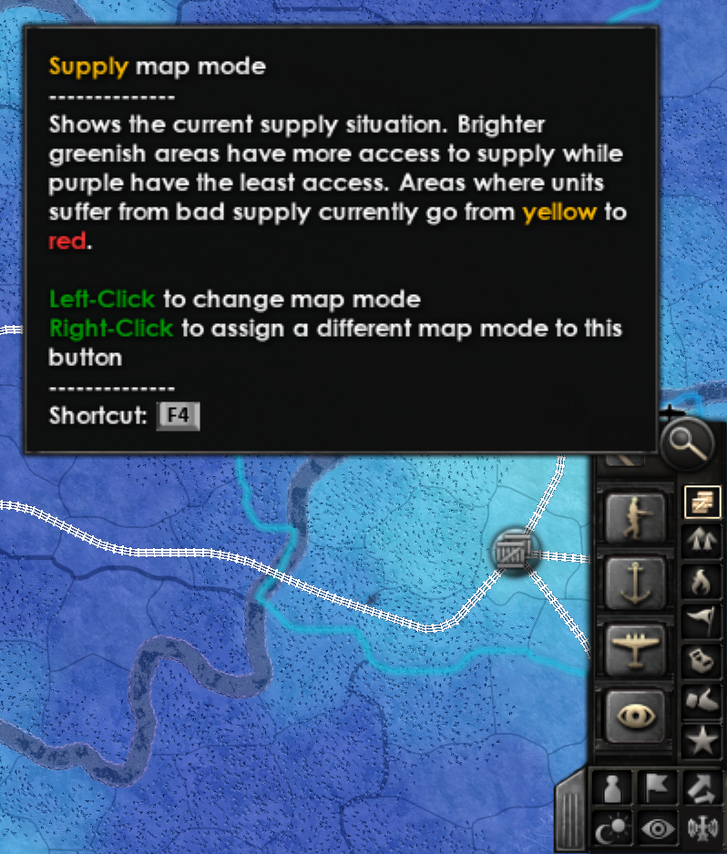
游戏中主要通过补给地图模式显示补给情况。按默认设置可用“F4”键打开，也可点击屏幕右下角的图标选择该地图模式。
补给地图模式按补给状况为每个省份着色，并以渐变方式优雅地呈现省级补给状况，便于同时辨识数百个省份。
- 亮（浅）蓝色：可用补给量很大
- 深蓝色：可用补给量较少
- 紫色：可用补给很少或没有，但该省内没有单位正受到补给不足的影响。
- 黄色：该省内单位的补给不足，但仍足以提供合理的部分补给。
- 亮红色：该省内单位补给不足，且正承受显著的补给相关惩罚。
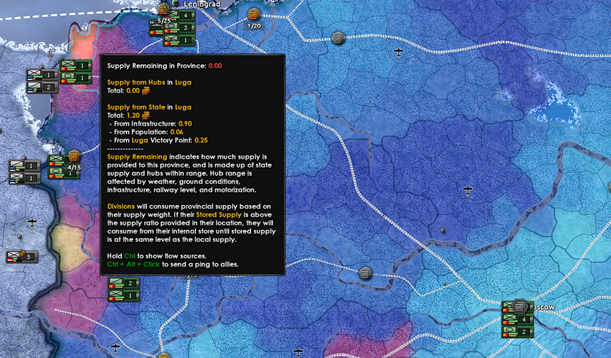
补给地图模式中的提示框极有价值，把鼠标悬停在不同项目上会显示不同信息：
- 单位：单位的补给抽取量及其来源。
- 补给枢纽：向该枢纽请求的补给量，并高亮显示通往首都的铁路连接。按住 Shift 键会显示该补给枢纽的范围（为当时的范围——范围会随天气变化）。
- 港口：向该枢纽请求的补给量，并显示可能从该港口抽取枢纽补给（而非州补给）的舰船的路径。按住 Shift 键会显示该补给枢纽的范围（为当时的范围——范围会随天气变化）。
- 省份：该省的总补给与可用补给。按住 CTRL 键还会显示枢纽补给来源的明细。
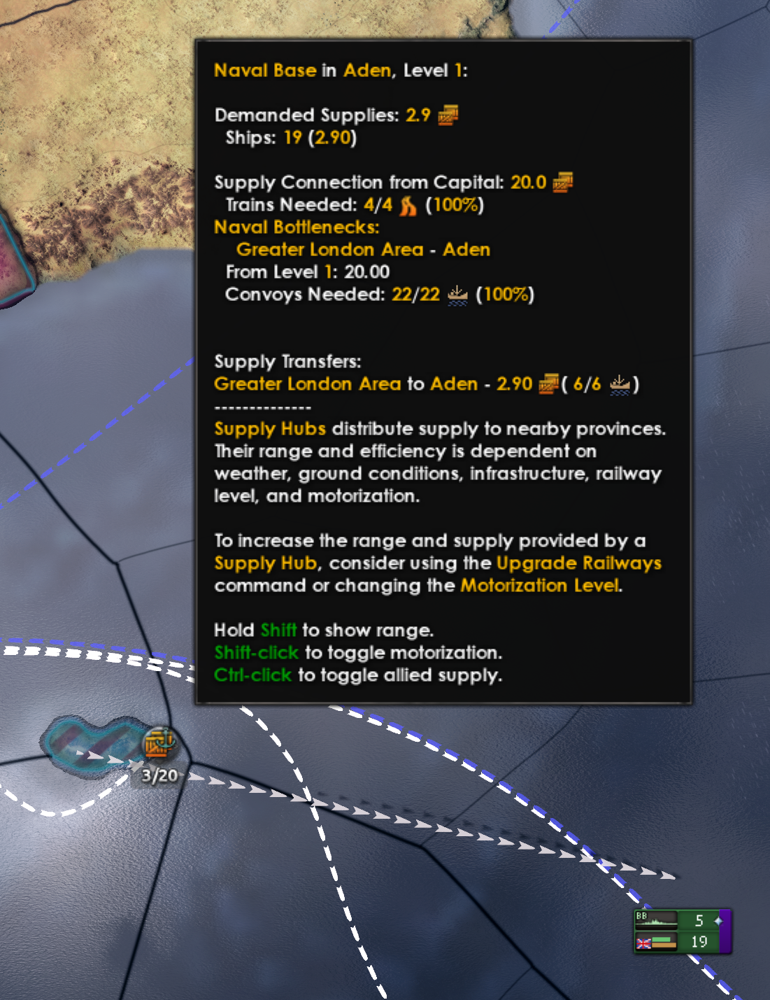
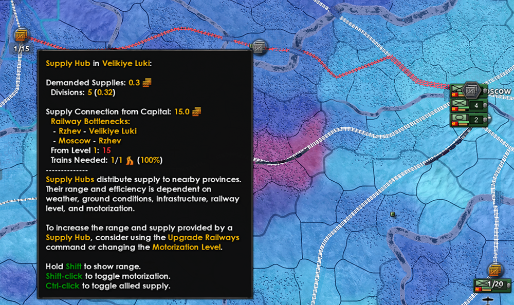
后勤
枢纽补给
枢纽补给是由补给枢纽或港口（港口也起补给枢纽的作用）提供的补给量。查看枢纽补给时需留意三个方面：
- 对某个补给枢纽补给能力的总抽取量。
- 补给枢纽的范围，以及该枢纽在给定省份中提供的补剂量。
- 省份会从所有在范围内的枢纽获得补给。
在大多数情况下（截至撰写时），最常见的补给问题是某个省份内补给不足，而不是枢纽补给总能力不足。
枢纽补给总能力
补给枢纽／港口的总能力取决于该枢纽／港口与首都之间铁路连接的等级，以及港口之间（船队出发港与到达港）的港口等级。
连接枢纽与首都的一级铁路为该枢纽提供 15 的基础补给输送量，铁路每再升一级容量增加 5，最高 35。与另一个一级港口相连的一级港口为接收港提供 8 的基础补给，港口每再升一级容量增加 3，最高 35。请注意，如果为该港口提供补给的运输船队航线遭到袭击，所提供的补给量会减少，直到该航线恢复容量为止。此外，补给输送量受该连接路径上任何一处最小的铁路或港口输送量限制（例如，若一段线路有三段铁轨，其中两段为 2 级、一段为 1 级，则该连接被视为 1 级连接、提供 15 补给；要把它升级为提供 20 补给的 2 级连接，就必须把那一段 1 级铁轨升到 2 级）（再举一例，若一段 3 级铁轨连接到一个 6 级港口，该港口又与一个 5 级港口相连，则该连接被视为提供 20 补给的 5 级港口连接）。河流可作为 1 级铁路连接使用。
| 等级 | 1 | 2 | 3 | 4 | 5 | 6 | 7 | 8 | 9 | 10 |
|---|---|---|---|---|---|---|---|---|---|---|
| 补给 | 8 | 11 | 14 | 17 | 20 | 23 | 26 | 29 | 32 | 35 |
| 等级 | 1 | 2 | 3 | 4 | 5 |
|---|---|---|---|---|---|
| 补给 | 15 | 20 | 25 | 30 | 35 |
唯一的例外是首都补给枢纽：其容量基础值设为 5，再加上该国民用工厂、军用工厂和海军船坞的数量。
枢纽补给范围
补给枢纽向每个省份提供补给取决于多项因素，其中最重要的是受补给省份与该补给枢纽之间的省份数量，并会受首都到该枢纽的铁路连接等级、基础设施等级、地形以及天气影响。
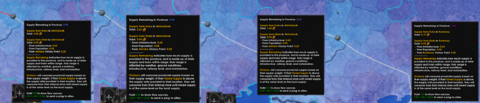
提升补给枢纽范围
除空运补给之外，一局游戏中省份补给水平的提升几乎全部来自枢纽补给量的增加。提升枢纽补给有四种途径：
- 提高枢纽或集团军的摩托化等级。
- 提高通往该枢纽的铁路连接等级。
- 提高该地区的基础设施等级。
- 新建补给枢纽。
请注意，前三种方法（摩托化、提高铁路连接等级和提高基础设施等级）彼此叠加——因此，在基础设施 1 级、铁路连接 1 级的州中，未摩托化的补给枢纽范围最短；而基础设施 5 级、铁路连接 5 级的完全摩托化枢纽范围最长。
务必牢记：枢纽补给的衰减会随着与枢纽、港口或首都之间距离每增加一个省份而显著加剧——因此，虽然扩大枢纽范围是可能的，但单次改动的效果可能相对较小，往往需要投入大量资源才能把范围推到枢纽之外的下一格。
摩托化
默认情况下，每个补给枢纽都设为“未摩托化”，以马匹图标表示。可以通过点击相应图标提升到两个不同的摩托化等级（见下例）。枢纽一旦摩托化，其图标中就会出现一两辆小卡车（取决于摩托化等级）（绿色卡车表示该枢纽被直接摩托化，灰色卡车表示它是由附近集团军摩托化的——详见下文）。请注意，用于补给枢纽摩托化的卡车，无论是直接分配给枢纽还是通过选择集团军的摩托化选项，都不消耗燃料或人力。
取决于摩托化等级，每个枢纽分别需要 0、40 或 80 辆卡车（图标符号：马匹、一辆卡车、两辆卡车）。
这些卡车会遭受损耗，在恶劣地形和天气下损耗会加剧，而且它们可能遭到被指派执行后勤打击任务的敌方飞机的空袭。
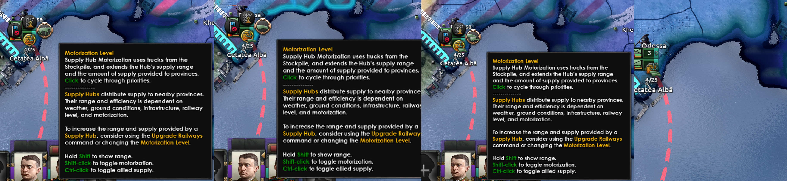
实现枢纽摩托化的另一种方式是在集团军层级指派。这会自动把为该集团军设定的摩托化等级应用到其补给来源范围内的枢纽上。其优点是减少了对枢纽摩托化等级的手动管理，但也可能导致部队需求波动，因为该集团军范围内的枢纽数量会随时间变化。关于实际效果，请见下方的三张截图及其说明。
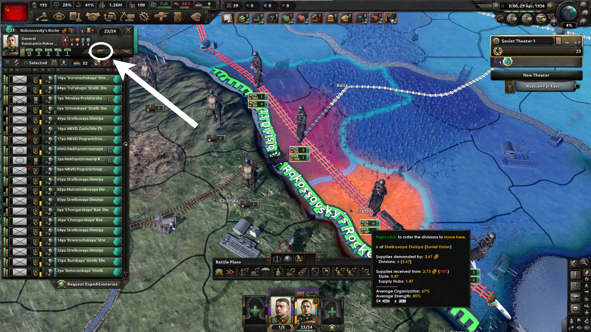
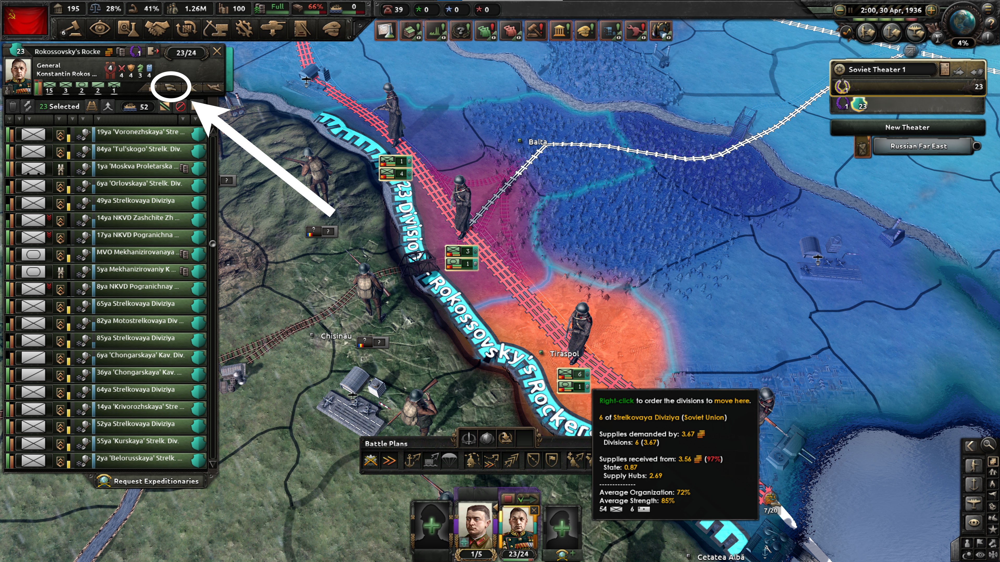
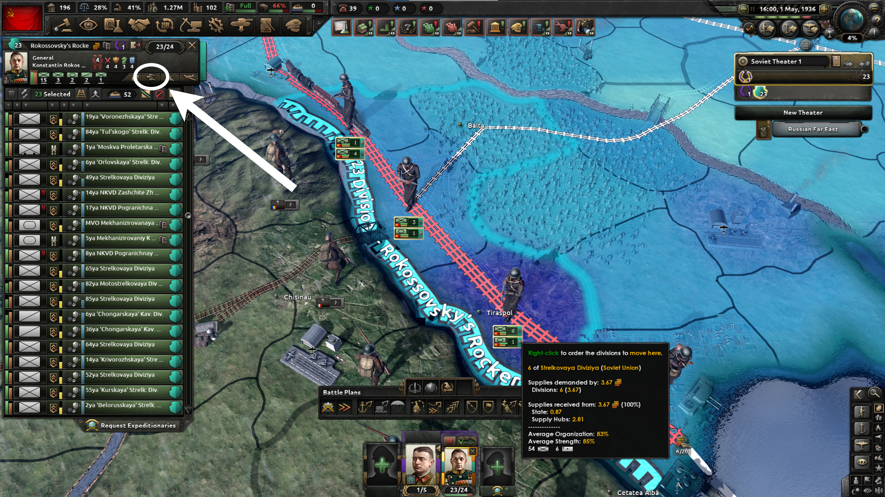
备注：只有卡车数量充足时，才能获得摩托化的全部收益。若分配到支援枢纽的卡车多于可用数量，收益会按卡车缺口比例减少。
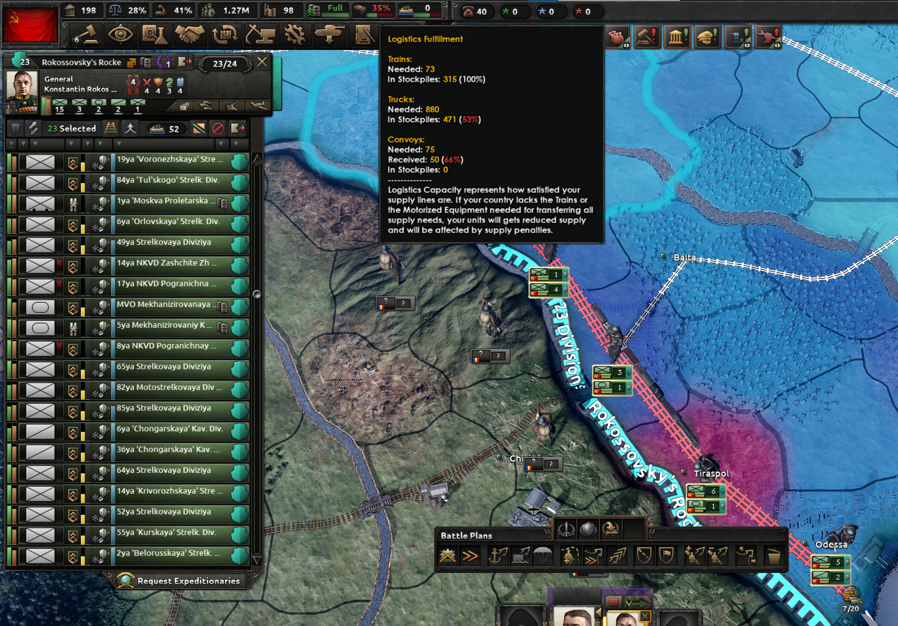
提高铁路连接等级
除摩托化之外，提高铁路连接等级是效果第二强、而且往往（但取决于该补给枢纽经铁路距离你首都的远近）也是第二快的手段。
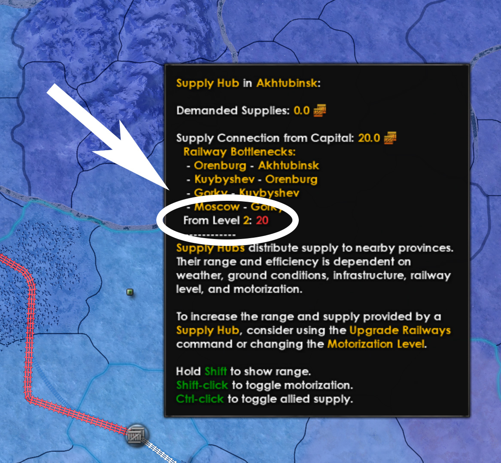
每格铁路花费 300 民用工业产能（CIC），每提升一级既有铁路再增加 130 CIC（最高 5 级），因此铺设 1 级铁路相对快速且便宜，而一条长距离的 5 级铁路则是重大的工业工程。例如，如下表所示，把一条铁路从零建到 5 级，每个省份共计需要 2800 CIC（300 + 430 + 560 + 690 + 820），并按建造加成和基础设施对建造速度的影响进行调整。
| 等级 | 1 | 2 | 3 | 4 | 5 |
|---|---|---|---|---|---|
| CIC 花费 | 300 | 430 | 560 | 690 | 820 |
实际修建铁路有多种方式：
- 选中补给枢纽，然后点击出现的三个图标中中间（最上）的那个。每点击一次，就会为通往首都的铁路连接上的每个省份再增加一级铁路（例如，对一个由 2 级铁路连接的枢纽点击三次，就会下达把它升级到最高等级的建造订单）。
- 打开生产界面，选择“铁路”按钮，然后点击两个枢纽之间铁路连接上黑圈中的某个白色数字——这就会下达把两个枢纽之间的铁路等级提高一级的建造订单。每多点一次就会再下达提高一级的订单。
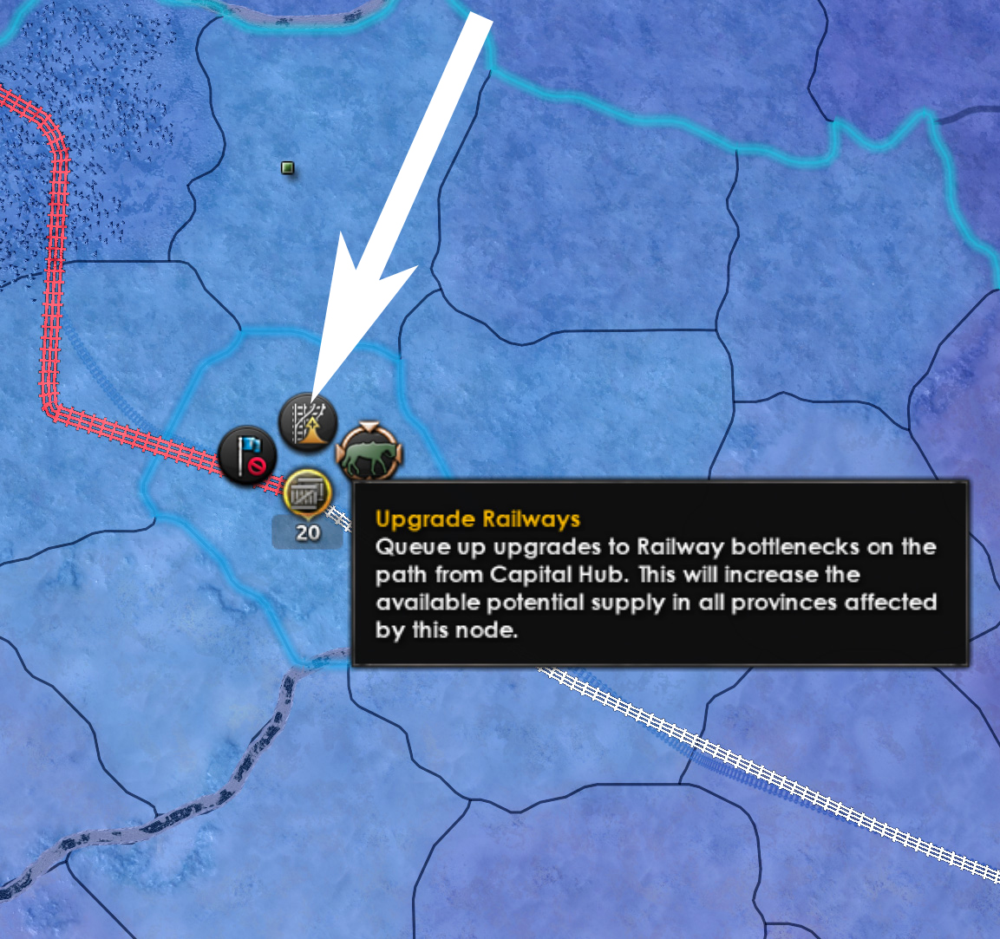
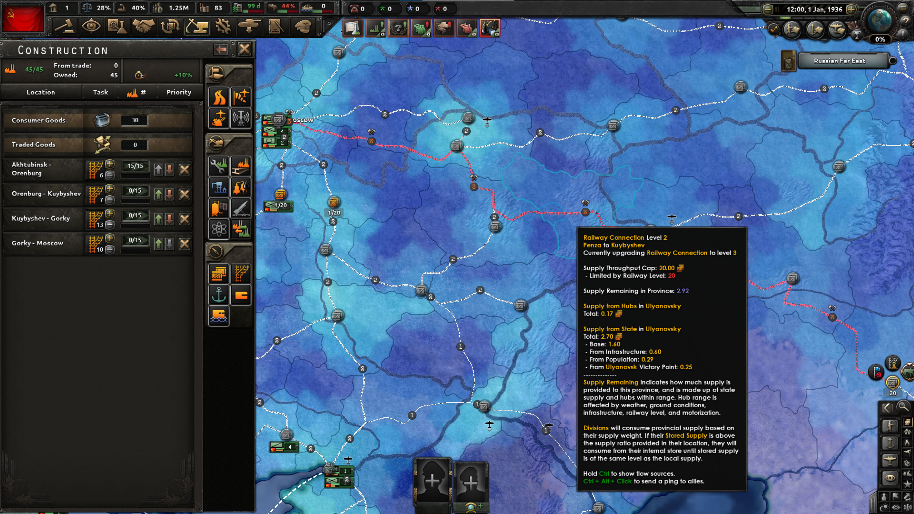
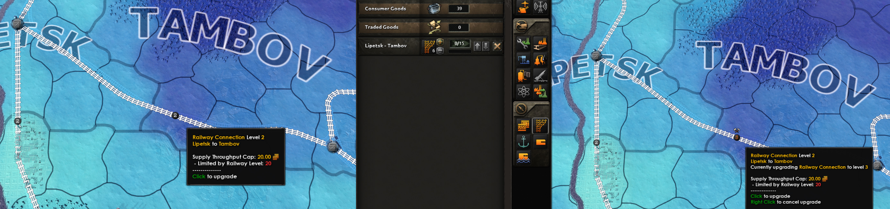
铁路每增加一级都会提高该枢纽的补给总量，也意味着从补给枢纽向外流出的补剂量增加。在某些情况下，这可能使完全没有枢纽补给的省份获得一些枢纽补给；但如上所述，距离补给枢纽越远“补给流量衰减”越严重，因此范围的扩展很可能仍然有限。
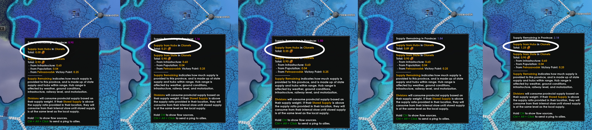
请记住，铁路对战略调动也很有用，铁路等级越高，部队战略调动就越快。
新建补给枢纽
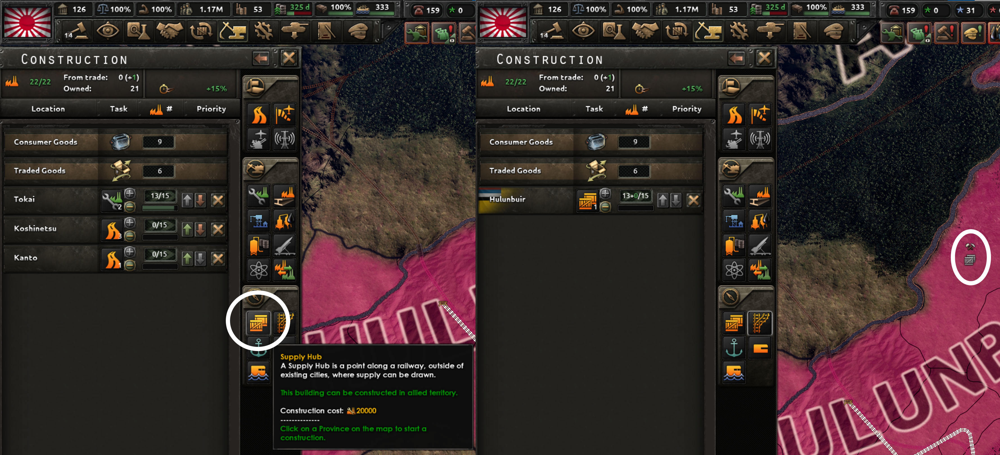
如果从现有枢纽获取枢纽补给看起来不划算或不可能，也可以新建补给枢纽。在沿海，港口可以充当补给枢纽，而且便宜得多（海军基地第一级 5,000 CIC，之后每级再增加 1000 CIC）。但在内陆就必须使用补给枢纽，其造价为 20000 CIC（受建造速度和基础设施建造加成影响）。
港口和补给枢纽都通过建造界面建造，如下图所示。
港口和补给枢纽都可以建在盟友和附属国的领土上。
只要一个港口能通过运输船队、其他港口和铁路追踪出一条通往首都的路径，它就能通过海运获得补给，无需铁路连接。
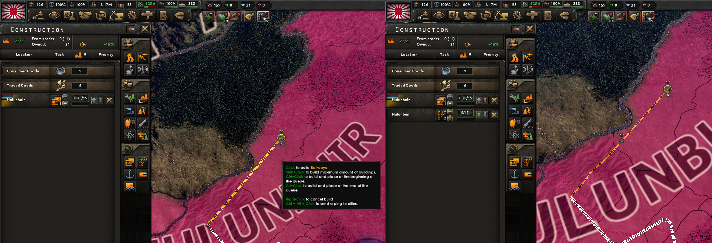
补给枢纽也需要与首都建立连接，可通过铁路或河流追踪。通过河流的连接是即时的：只要新补给枢纽经河流（与该补给枢纽所在的省份接壤）连接到首都，或连接到与同一条河接壤的省份中的另一个补给枢纽或港口，连接就会建立。
要用铁路连接新建的补给枢纽，请打开建造界面并选择“铁路”选项，然后点击一个已与首都相连、拥有铁路的省份，再点击拥有新补给枢纽的省份。所修建铁路的等级将与它延伸来源省份的铁路等级相同，但可以手动调低或调高（只要铁路尚未建成），方法是在建造列表中使用（该铁路条目上的 +/- 按钮），或在补给地图上操作（左键点击在建铁路上的小数字（交叉锤子下方）可提高等级，右键点击可降低等级）。
铁路随时可以建在己方控制、盟友或附属国领土上，且无需等待补给枢纽建成（甚至无需开工）。
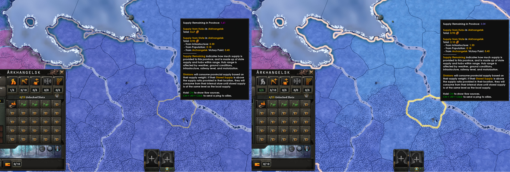
提高基础设施等级
更高的基础设施等级还能让枢纽补给送得更远，因为它降低了枢纽补给流量的衰减（基础设施 5 级时最多可减少 0.3 的衰减）。请注意，起作用的是补给流出省份所在州的基础设施等级。例如，若有两个州，一个 5 级基础设施的州拥有补给枢纽并与一个 1 级基础设施的州接壤，那么从 5 级基础设施州某省流向相邻的 1 级基础设施州某省的补给，会按 5 级基础设施计算；但从 1 级基础设施州某省流向同一 1 级基础设施州内相邻省份的补给，则按 1 级基础设施计算。
与其他扩展补给枢纽范围的方式一样，由于距枢纽越远（按省份数计）补给衰减越严重，任何提升很可能都只在边际上有效（例如也许只能多覆盖一个省份）。
请注意，每级基础设施花费 6000 CIC——也就是说，一个州里升四级基础设施比新建一个补给枢纽还贵。
列车
要满效率运转，补给网络需要列车来支撑铁路连接，就像海军连接需要运输船队一样，所需列车数量与每个枢纽需要提供的枢纽补剂量相关。某个枢纽所需的列车数量可在该枢纽的提示框中查看。
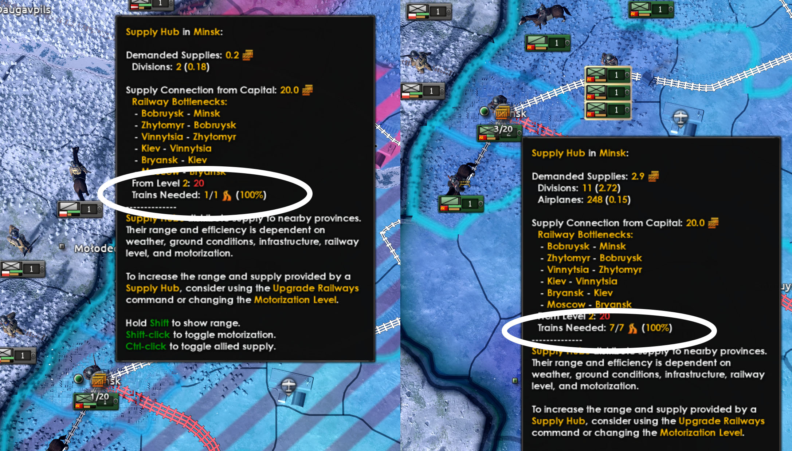
整个网络所需的列车数量可在后勤提示框中查看，把鼠标悬停在屏幕顶部的后勤图标上（它看起来像一个箱子，旁边有百分比）即可调出。如果列车少于网络所需，抽取枢纽补给的师可获得的枢纽补给就会减少。
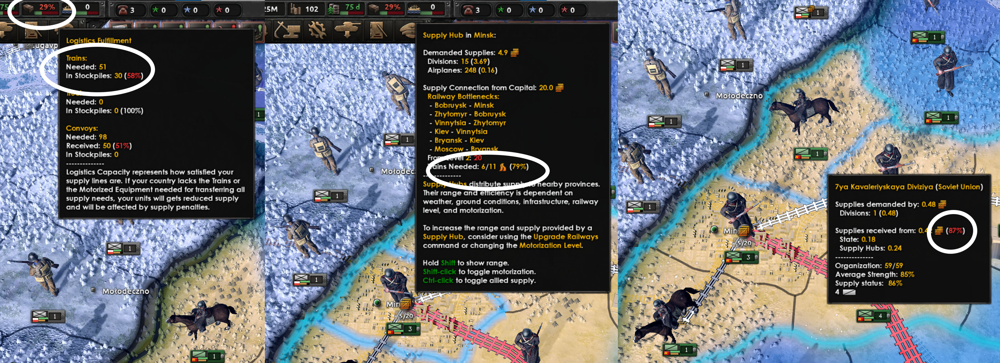
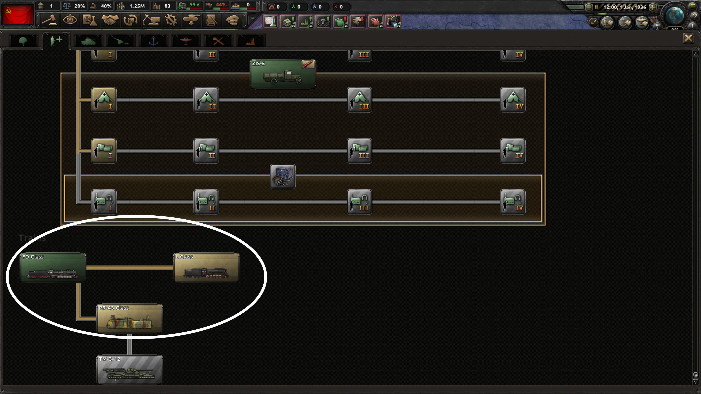
列车不会遭受损耗，但可能被使用后勤打击的敌方飞机空袭击毁。
除基础型号列车外，游戏中还可以研究另外两种列车。一种是无装甲的“紧缩”列车——功能与基础型号相同，但价格更低（50 军用工业产能（MIC）而非 70）。另一种是装甲列车，详见下文。
装甲列车
装甲列车是一种特殊列车，更能抵抗敌方的后勤打击空中任务。如果你库存中有装甲列车，它们会优先于其他列车类型被使用。装甲列车的生产成本显著更高，为 105 MIC，因此比初始列车贵得多，也是紧缩列车成本的两倍多。
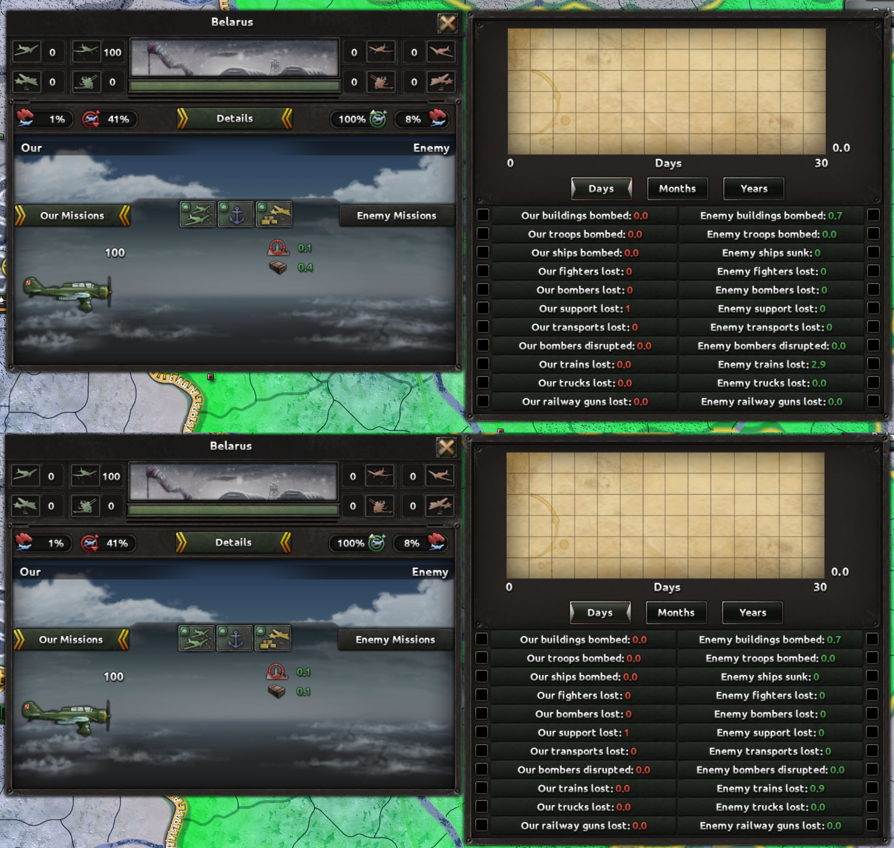
夺取铁路与补给枢纽
随着前线推进到敌方领土，敌方控制的铁路线和枢纽可能落入我方控制。铁路线可能需要也可能不需要修复（铁路可能被战略轰炸破坏，也可能被对手在失去该州控制权前实施焦土政策），但在多数情况下它们不会立即可用。在非核心领土上夺取铁路时，到铁路可用的冷却时间为 10 天；若该领土是核心州则为 5 天；若战争是内战则没有冷却时间。
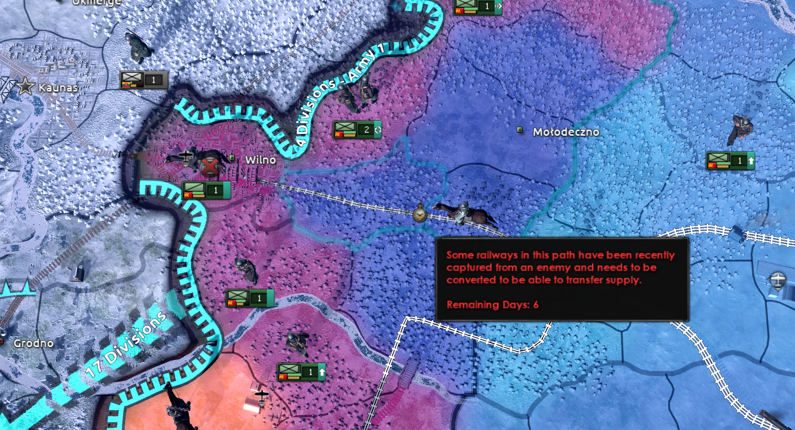
铁路转换时间
新夺取的枢纽只有在通过“已转换”的铁路连接起来后才能运作，而每个省份都必须在己方控制下经过所需天数完成转换后，连接才会建立。不过，补给枢纽本身没有转换时间。
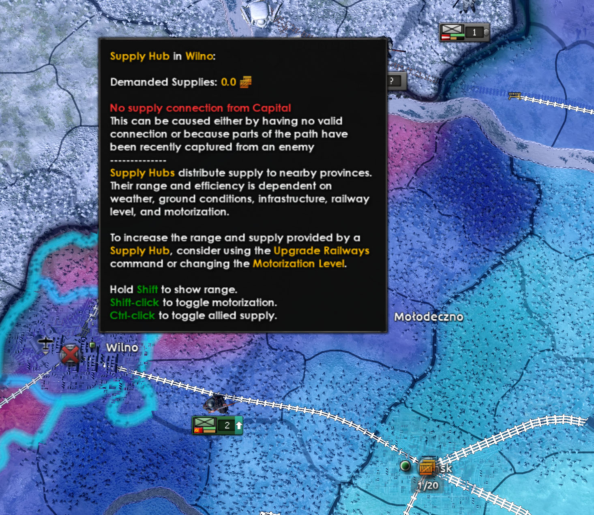
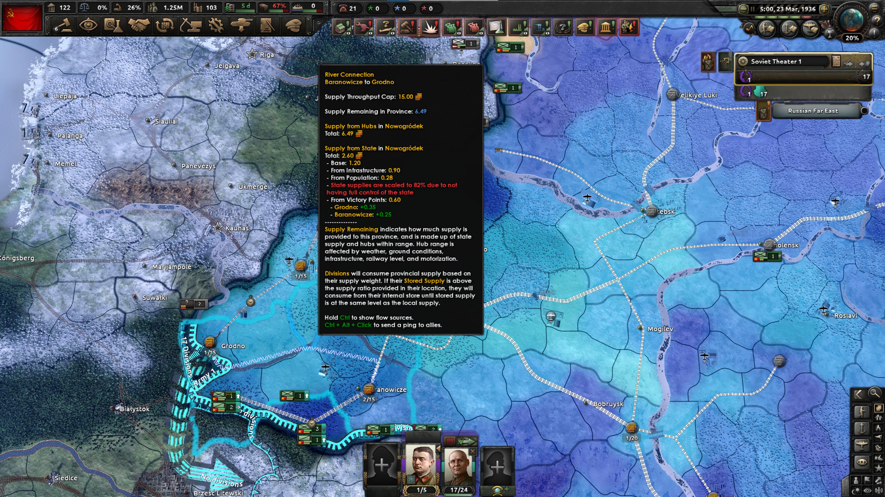
天气与地形
天气和地形都会影响补给系统——维基上天气与地形页面中的表格给出了不同地形／天气状态下各种补给影响的数值。考虑地形与天气影响时需留意：
- 有两种天气效果：
- 补给系数会减少从补给枢纽流出的补给（实际上缩小其范围），表现为对流入某省补给的百分比削减［待确认］。这些效果可以叠加，例如若某地区地面状况为深雪、天气状况为暴风雪，这种深冬状况会在其持续期间大幅缩小枢纽补给范围。
- 补给消耗系数会提高师的补给消耗。这两项都可能同时起作用，取决于具体情况。
- 有一种地形效果：
- 补给流通惩罚系数.它改变远离枢纽时枢纽补给的衰减，并与其他补给流量削减相加。它不是百分比数值，而是对补给量的直接改动（通常是减少，但在城市地区实际上是增加），与省份提示框中显示的枢纽补给数值相关。
州补给
与枢纽补给不同，州补给是州内提供的固定补給量，取决于四项：胜利点、基础设施、人口以及所谓的“基础补给”，即州内固定的一份额外补给。人口和基础设施带来的州补给存在于每个（非不可通行）州，但少数州没有胜利点，许多州没有基础补给。
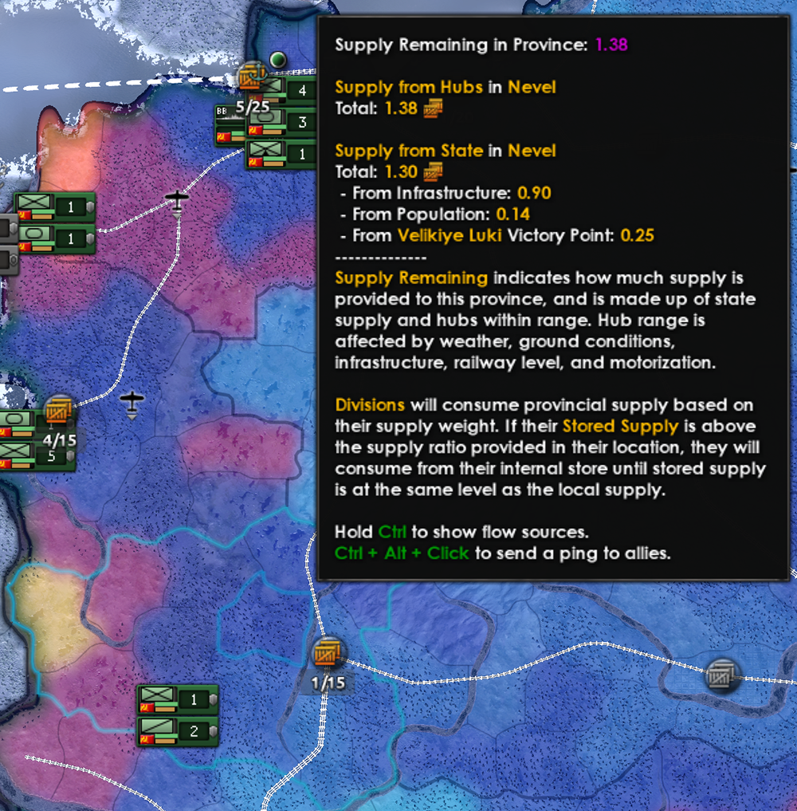
拥有胜利点的州会由此获得 0.2 州补给，再按该州胜利点总价值获得额外 0.05 补给／点（例如，一个州有 1 个 1 点胜利点和 1 个 5 点胜利点，则其胜利点补给为 0.5，由 0.2 基础值加上总共 6 点胜利点带来的 0.3 组成）。部分示例如下表：
| VP | 50 | 20 | 15 | 10 | 5 | 3 | 1 |
|---|---|---|---|---|---|---|---|
| 补给 | 2.70 | 1.20 | 0.95 | 0.70 | 0.45 | 0.35 | 0.25 |
只要基础设施未受损，每级基础设施提供 0.3 补给（基础设施数值见下表）——但若受损，基础设施提供的州补给量会减少，直到损坏被修复。
| 基础设施等级 | 5 | 4 | 3 | 2 | 1 |
|---|---|---|---|---|---|
| 补给 | 1.50 | 1.20 | 0.90 | 0.60 | 0.30 |
人口按递减比例提供补给：在 3 万人的州中每省 0.01 补给，在 2360 万人的州中每省 4.25 补给。换算成每百万人，该比例从人口稀疏州的每百万人 0.3 补给，下滑到人口极稠密州（如中国各省）的每百万人 0.18 补给。
州补给会在使用其他补给来源之前，平均分配给该州内的所有单位（包括空军和海军单位）。因此必须注意：虽然州补给可能足以支撑枢纽范围之外的部队，但这些部队仍需与从枢纽或港口抽取补给的部队分享这份州补给。
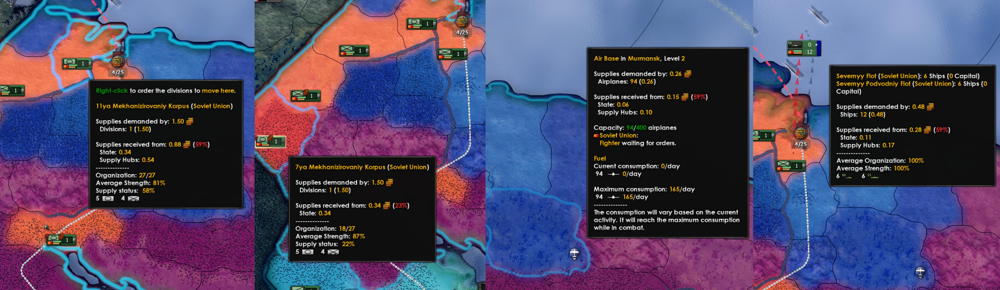
理解州补给对于理解补给地图模式的“热力图”至关重要——与枢纽补给不同，热力图上每个省份的着色考虑了整个州可用的州补给总量——但一旦该州补给在州内其他地方被用掉，其他省份可用的州补给就会相应减少。查看某地区，判断热力图着色主要来自枢纽补给还是州补给，能更清楚地表明在其他省份向该州投入更多部队时该省的有效补给情况。更多细节请见下方两张截图提供的示例。
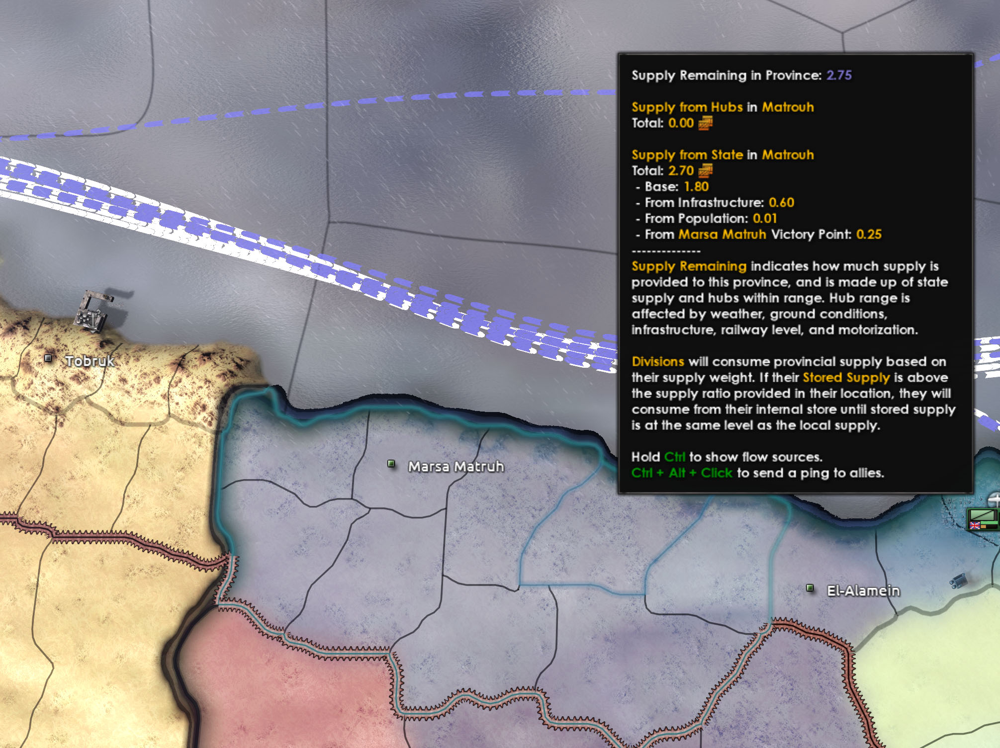
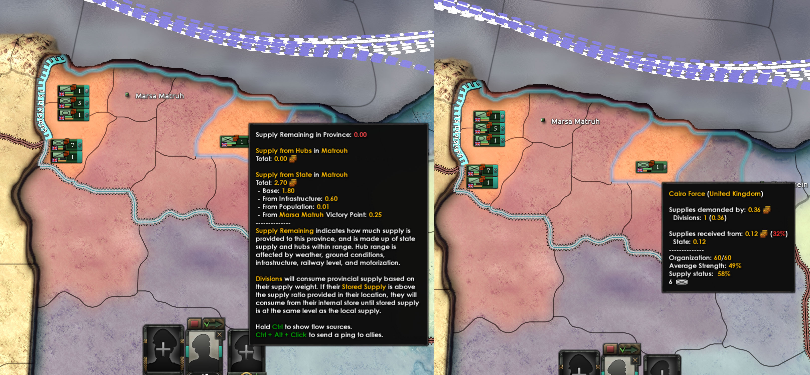
争夺中的州
如果某个州的控制权在交战双方之间被分割，州补给量会被一分为二。枢纽、人口和基础设施部分按双方各自拥有的该州省份比例分配，而胜利点带来的州补给则提供给拥有这些胜利点所在省份的一方。
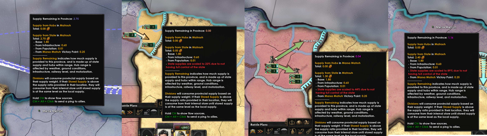
空运补给
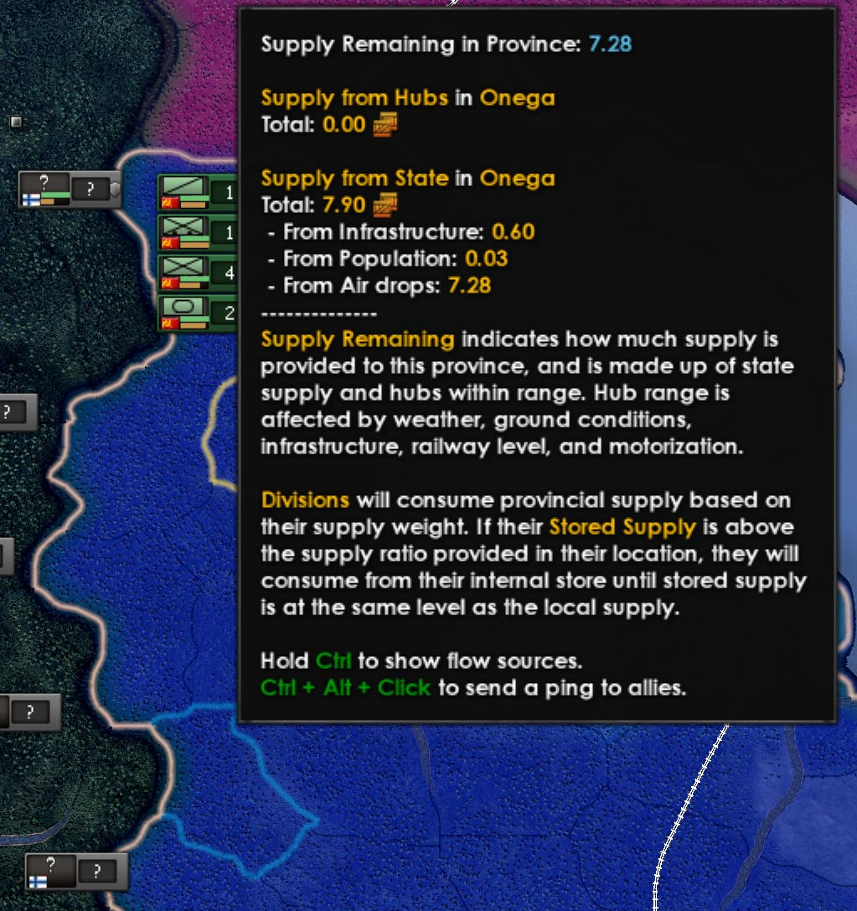
补给系统的第三大支柱是空运补给。空运补给由执行“空中补给”任务的运输机提供。与州补给类似，通过这种方式提供的补给总量可在执行空运任务的空域中任意省份使用（无论是否在运输机的航程之内）。但与州补给不同的是，空运补给最后被抽取，因此单位只有在无法从州补给和枢纽补给满足全部补给需求时，才会动用空运补给。
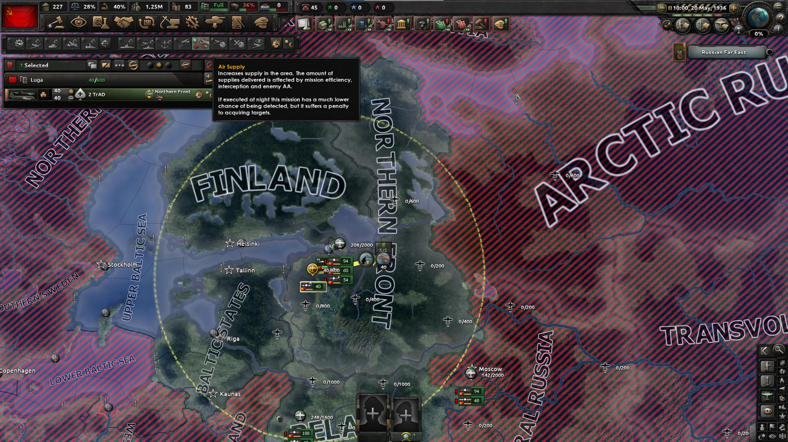
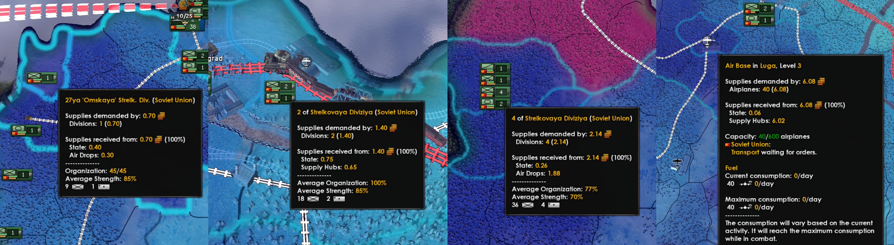
与任何空中任务一样，任务效率会减少可提供的补給量，而效率可能受多种因素影响，包括天气、执行任务的中队的补给状态，以及空域大小与该中队航程之间的关系。在任务效率 100% 时，每架补给充足的运输机在良好天气下可提供每架 0.01 补给[1]。
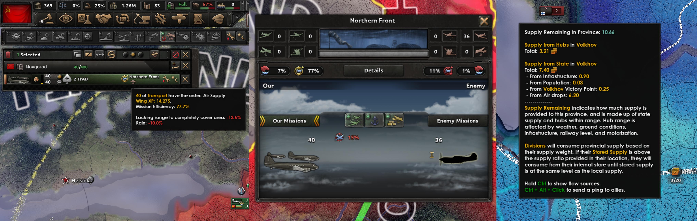
航空队的补给需求取决于它们通过任务效率能够提供的补給量——因此在其他条件相同的情况下，能覆盖更大比例空域的运输机航空队会比同样规模、但使用覆盖范围更小的机场的航空队提供更多空运补给。执行空中补给任务的运输航空队只能使用州补给和枢纽补给，自身不能抽取空运补给。
补给不足的影响
陆军单位
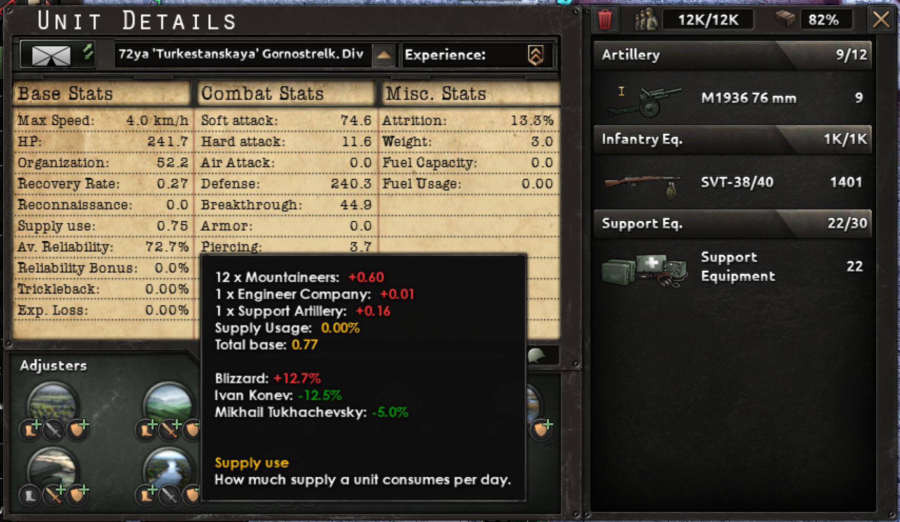
一个师要达到满额补给所需的补給量取决于多项因素，包括一线营、支援营（后勤营会降低总体补给消耗）、天气以及其指挥官的能力。
如果某个师未达到满额补给，其地图图标以及集团军师列表中的图标上会出现一个暗淡或亮红色的箱子图标。要精确查看某个师的补给状态，请把鼠标悬停在集团军师列表中的图标上以调出提示框。师的补给会向其所在省份可支撑的水平靠拢，无论升还是降。例如，若一个师从补给 100% 的省份移动到补给 50% 的省份，在新省份的第一个小时里它仍然是 100% 补给，随后随着其储存补给消耗到 50%，该师的补给状态才会下降。
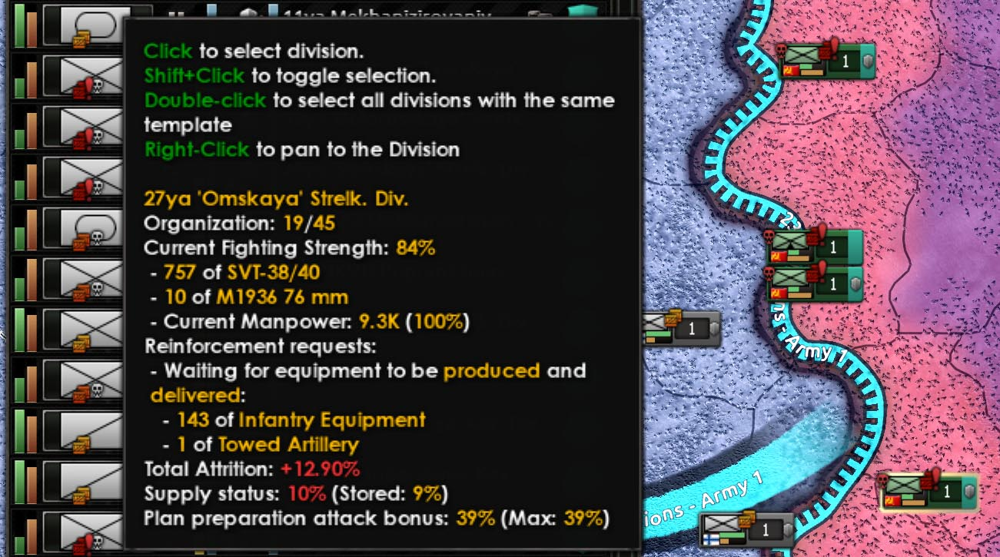
补给中断会对一系列单位属性造成显著惩罚。请注意，从达到低补给状态到惩罚完全生效之间可能存在延迟。受低补给影响、且影响随补给状态恶化而加剧的单位属性包括：
- 速度
- 最大组织度
- 组织度恢复速度
- 攻击（防守单位的最大惩罚（-50%）高于进攻单位（-20%））
- 突破（对进攻单位）
- 防御（对防守单位）
- 损耗——若某单位的补给水平降至 35% 或更低，它就会开始遭受基于补给的损耗，补给降得越低，该单位消耗的装备就越多。
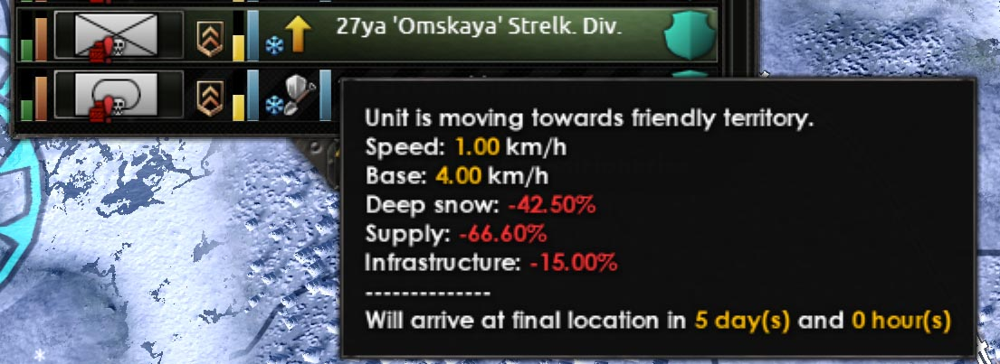
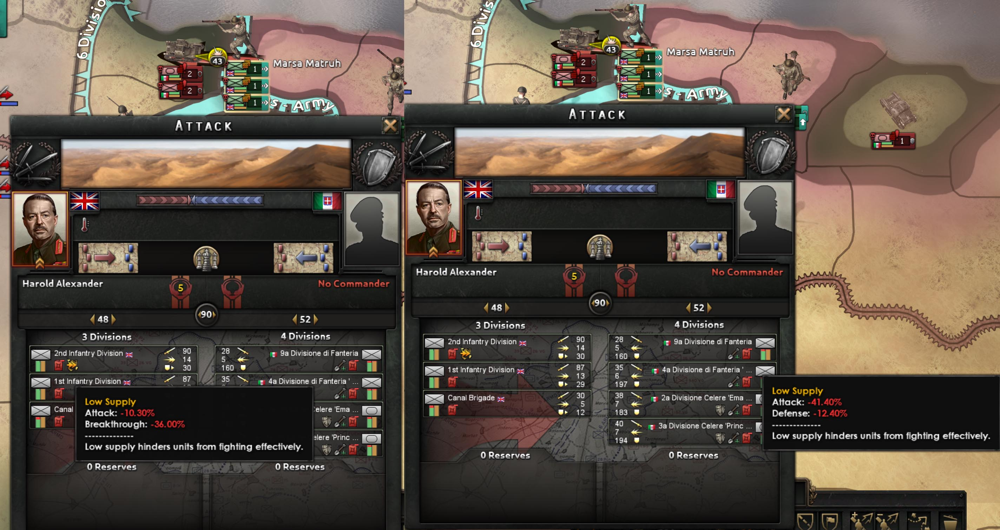
处于低补给状态也会影响人力补充的速度。只要某个师还有一条经由友方省份、港口和／或运输船队连续通往首都的路径，人力补充就会到达——不过在极低补给水平下可能需要很长时间。但请注意，装备补充的速度不受师补给状态影响（不过若某个师补给不足，只要处于这种状态就会持续遭受损耗，这可能使该师无法达到满装备水平）。
如果某个师与首都的联系被切断，即使它因为占据胜利点或其他州补给来源、或因为有空运补给而处于满额补给状态，它也不会获得人力或装备补充。
请注意，燃料的运作方式与人力或装备略有不同。与人力、装备一样，若某单位与首都的联系被切断，它就不会得到补充；与人力一样，若某单位未达满额补给，燃料补充速度会变慢。但与人力不同的是，一旦补给状态足够差，燃料供应就会完全停止。空运补给不影响燃料供应，因此即使某单位能沿省份连通到首都、且空运补给充足，只要州补给或枢纽补给不足，它仍可能得不到燃料补充。
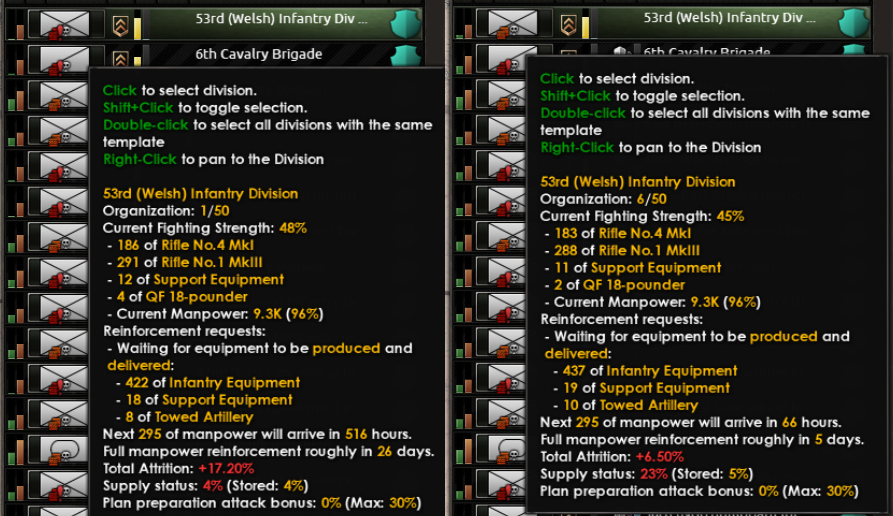
储存补给／补给宽限
补给宽限与储存补给指的是同一件事，即某个师在处于满额补给省份时储存的、超过 100% 的那部分补给。某个师的储存补给量可在集团军界面中把鼠标悬停在该师名称上弹出的提示框底部看到，如下例所示。
一个师可累积的储存补给基础量为 150%。其下降速度各有不同，但即使所在省份补给不足，它也应当能让该师在全补给效率下作战 2-3 天，之后储存补给才会降到 100% 以下。
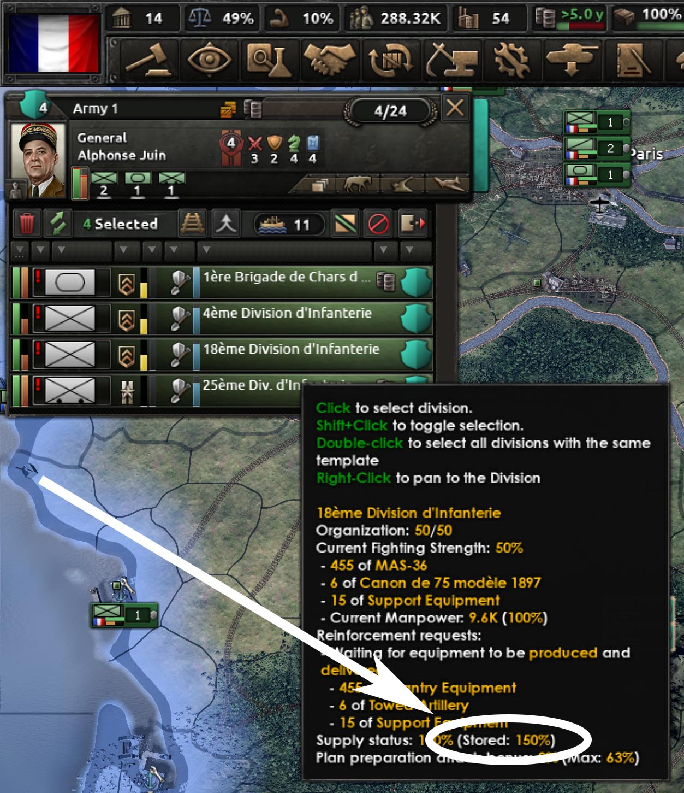
对于特种部队师，某些科技可以延长补给宽限。若海军陆战师由拥有“两栖”特质的将领指挥，还可进一步延长。额外提供的补给宽限以小时表示，但这只是大致参考，因为储存补给的下降速度会因该师所处情况而变化。
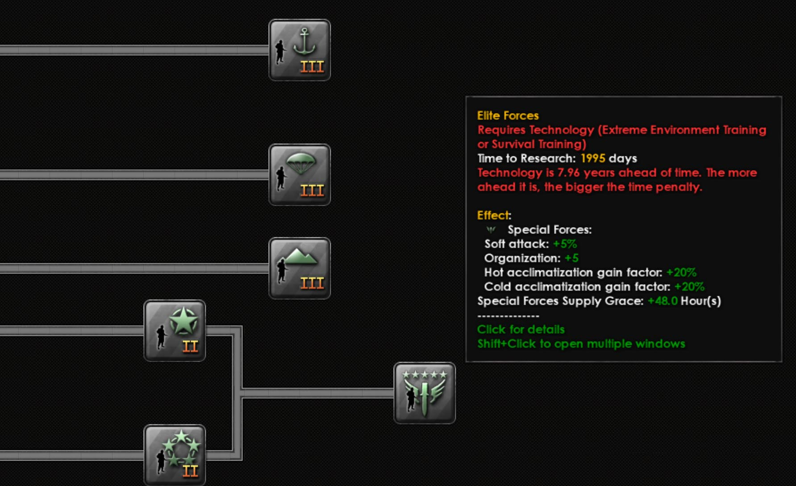
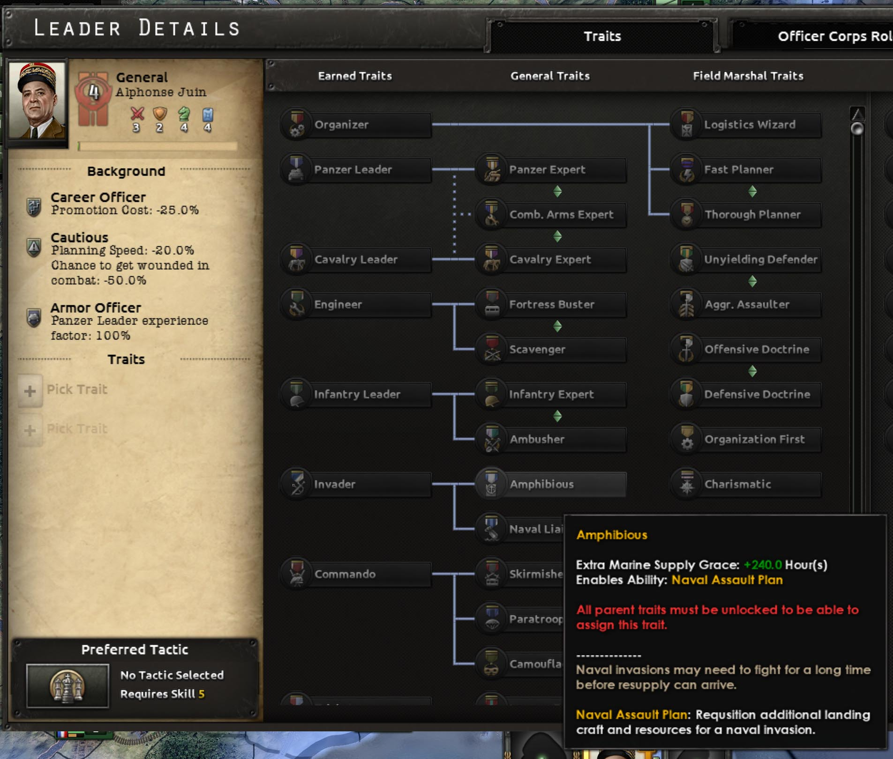
空军单位
空军单位的补给取决于其所在空军基地省份的补给水平。若某空军单位正在执行任务且补给未达 100%，其效率会因补给不足而受到减益。务必注意，如果补给降到某个阈值以下，该空军单位也得不到足够燃料，这会进一步降低任务效率。
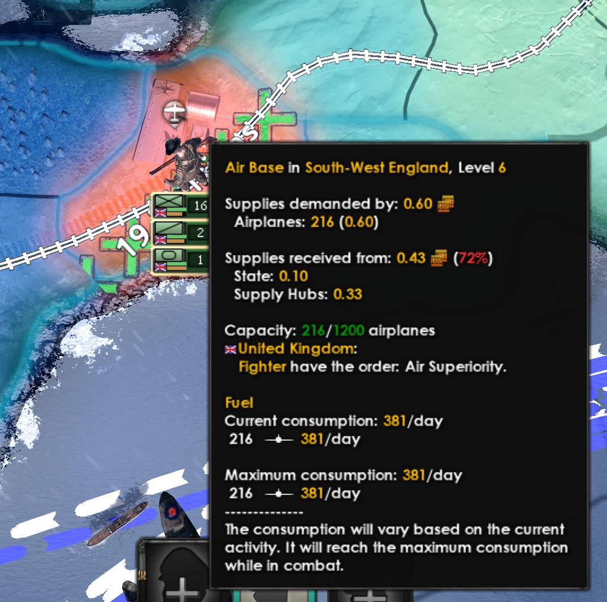
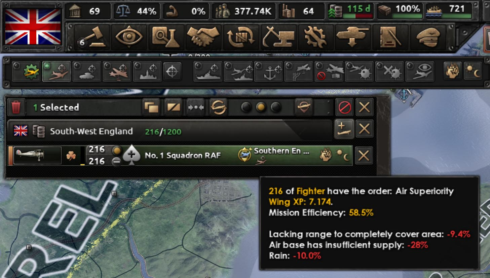
对于海军单位，补给不足会直接影响侦察效率与维修速度，还会降低燃料获得速度，视燃料状况也可能影响其战斗效率。值得注意的是，海军单位可以从其补给来源枢纽获取全部潜在补给（不像陆军和空军单位还会受省份可支撑量的限制），因此海军单位补给不足的情况远比陆军或空军单位少见。
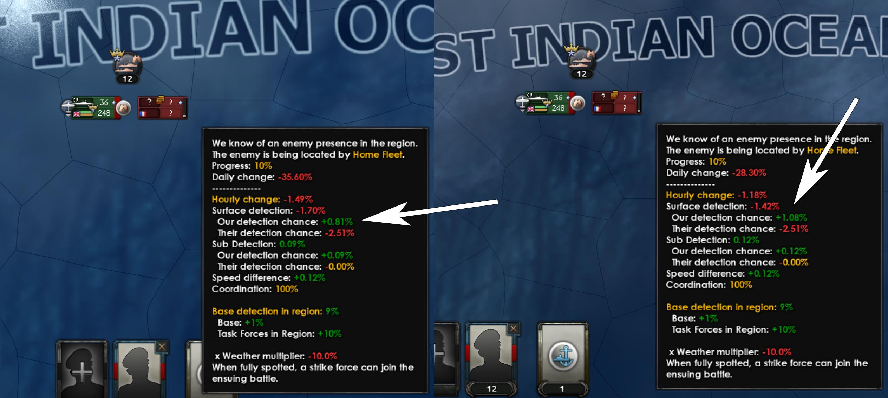
盟友与补给
默认情况下，你可以从盟友的补给枢纽获取补给，盟友也可以从你的补给枢纽获取补给。但请注意，如果你在盟友领土上作战，你无法使用州补给系统。盟友的师会与东道国的师共享枢纽补给，但东道国的师补给状况可能略好一些，因为它们还能获得可用的州补给。
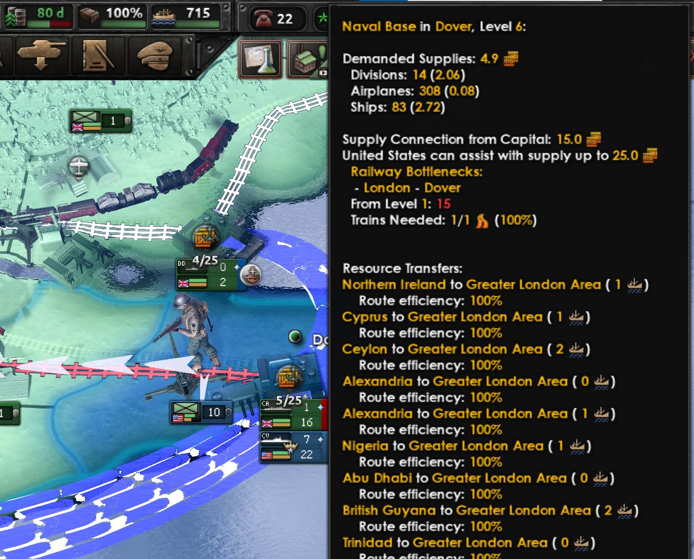
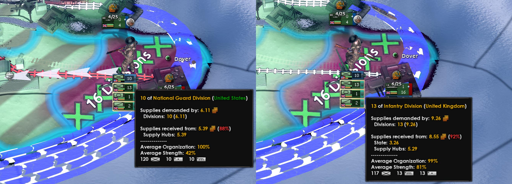
虽然 AI 不会这样做，但如果你不想让盟友参与某条战线，可以逐个枢纽关闭对盟友的补给。要关闭（或重新开启）某个枢纽对盟友的补给，请点击该枢纽，然后选择补给枢纽符号左上方的小蓝旗（见下方示例）。
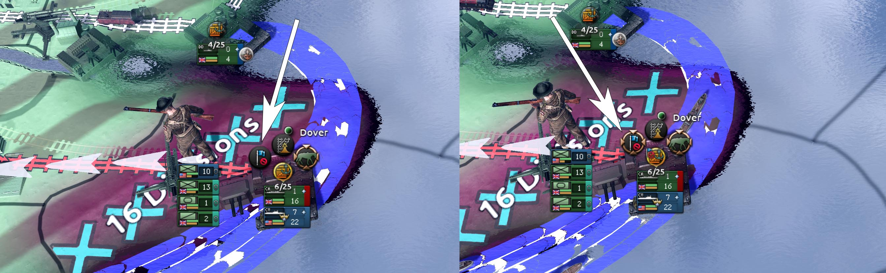
参考资料
| 政治 | 意识形态 • 阵营 • 国策 • 理念 • 政府 • 傀儡国 • 流亡政府 • 外交 • 世界紧张度 • 内战 • 占领 • 力量均势 |
| 生产 | 贸易 • 生产 • 建造 • 装备 • 燃料 • 军工组织 • 国际市场 |
| 科研与科技 | 科研 • 步兵科技 • 支援连科技 • 装甲科技（也包括 未拥有绝不后退）• 火炮科技 • 陆军学说 • 特种部队学说 • 海军科技（也包括 未拥有全民持枪）• 海军支援科技 • 海军学说 • 空军科技（也包括 未拥有以血盟誓）• 空军学说 • Engineering科技 • Industry科技 • 特殊项目 • 科学家 |
| 军事与战争 | 战争 • 和平会议 • 陆军单位 • 陆战 • 师编制设计 • 坦克设计 • 陆军编制器 • 集团军 • 指挥官 • 作战计划 • 战斗战术 • 舰船 • 舰船设计（伦敦海军条约）• 海战 • 飞机设计 • 空战 • 经验 • 军官团 • 损耗与事故 • 后勤 • 人力 • 核弹 • 突袭 |
| 间谍活动 | 情报 • 情报机构 • 特工 • 任务 • 行动 |
| 地图 | 地图 • 省份 • 地形 • 天气 • 州 |
| 事件与决议 | 事件 • 决议 |